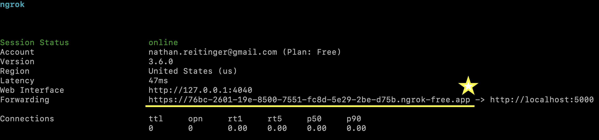

Quick Setup
The following instructions need only be accomplished by the team member running the server.
Install
git clone https://github.com/nathanReitinger/CART
Requirements
Ubuntu
sudo apt-get update
sudo apt install python3-pip
pip3 install -r requirements.txt
Windows
==> Search for python3.n in Microsoft store
pip3 install -r requirements.txt
MacOS
brew install python3
pip3 install -r requirements.txt
ngrok
Warning
ngrokis not required to runCARTbut is strongly recommended because it allows one team member to set up a server that can be accessible by any other team member.
- Sign up: https://dashboard.ngrok.com/signup
- Get auth token: https://dashboard.ngrok.com/get-started/your-authtoken
- Get static page: free ngrok static domain
OPTIONAL you can use your own server—but in the spirit of free and open source software , we assume a private server is not available.
Getting Started
Note
CARTwill assume that papers are represented as .csv files and that these files are found in theabstracts/folder.
- For quick setup, it is easiest to use the example abstracts. Copy the contents of
-example_data_bigor-example_data_smallinto the abstracts folder. The file structure should look like this:
.
├── abstracts
│ │ 1.csv // your abstracts go here
│ │ 2.csv // your abstracts go here
│ │ ...
│ └── ngrok_auth.txt
- the
ngrok_auth.txtfile stores your authToken if you are using thengrokflag.
localhost (best for testing or development)
EXAMPLE 1: start CART on localhost by passing in each team member -c user1 and use default flags
python3 cart.py -c user1 -c user2
- two coders (user1-2)
- defaults for all other flags
- e.g., two reviews will be required per abstract
- point your browser to the localhost address posted in the terminal, there you will find the login screen of the app.
* Serving Flask app 'cart'
* Debug mode: on
WARNING: This is a development server. Do not use it in a production deployment. Use a production WSGI server instead.
* Running on all addresses (0.0.0.0)
* Running on http://127.0.0.1:8081 <==================== address you want ***
* Running on http://192.168.0.191:8081
Press CTRL+C to quit
* Restarting with watchdog (fsevents)
#
#
# ,-. ,-. ,-. |-
# | ,-| | |
# `-' `-^ ' `'
#
#
* Debugger is active!
* Debugger PIN: 760-158-545
EXAMPLE 2: start CART on localhost by passing in team members, the port, and a confetti flag
python3 cart.py -c user1 -c user2 -p 8081 -cf 30
- two coders (user1-2)
- port set to 8081
- if the OS finds that the port is being used,
CARTwill exit (specify a new port or close the port in use) - confetti spray set to 30
* Serving Flask app 'cart'
* Debug mode: on
WARNING: This is a development server. Do not use it in a production deployment. Use a production WSGI server instead.
* Running on all addresses (0.0.0.0)
* Running on http://127.0.0.1:8081 <==================== address you want ***
* Running on http://192.168.0.191:8081
Press CTRL+C to quit
* Restarting with watchdog (fsevents)
#
#
# ,-. ,-. ,-. |-
# | ,-| | |
# `-' `-^ ' `'
#
#
* Debugger is active!
* Debugger PIN: 760-158-545
ngrok (best for teamwork)
EXAMPLE 1
python3 cart.py -c user1 -c user2 -c user3 -n 1l9nyS6lXovar....LECyV -cf 20
- three coders (user1-3)
ngrokauthToken "1l9nyS6lXovar....LECyV"- confetti on every 20th vote submitted by a team member
- this will produce a random URL on each run of
CART

Notification
The following option allows team members to connect to the same domain each time, and
ngrokoffers static domains for free.
EXAMPLE 2
python3 cart.py -c user1 -c user2 -c user3 -d selected-crawdad-loved.ngrok-free.app -n 1l9nyS6lXovar....LECyV -cf 20
- three coders (user1-3)
ngrokauthToken "1l9nyS6lXovar....LECyV"ngrokstatic domainselected-crawdad-loved.ngrok-free.app(use your own)- confetti on every 20th vote submitted by a team member
- this will use the static URL for successive runs!